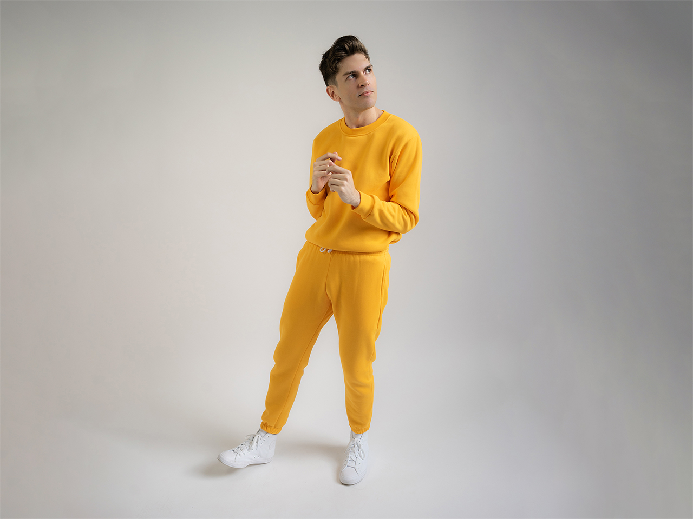

Factsheet
Event Name:
Games Gig
Ticket link:
freeplay.net.au
Facebook Event:
https://fb.me/e/2kyo9nRd8
Event Date:
Thursday June 10th, 2021
Doors at 6:30pm, Music from 7pm
Venue:
The Toff in Town
252 Swanston St, Melbourne
Contact:
Jacob Leaney
jacob@thingsforhumans.studio
0492995445
Games Gig: Indie musicians perform their music from indie games
Games Gig is the official Thursday night Freeplay Festival event, a music focused afterparty featuring line-up of indie, pop, and electronic game composers performing a music from Melbourne indie games. The even is on June 10th 2021, with doors at 6:30pm and music from 7pm.
Come and grab some food and drinks, chat and celebrate the year with some awesome music at one of Melbourne's iconic music venues, The Toff in Town!
Games Gig came about with muso/game devs Jacob Leaney and Maize Wallin wanting to showcase game music that doesn't often get a chance to be seen and heard live, performed by the people that wrote it. Games Gig focuses heavily on electronic and pop music, in contrast to orchestral and chiptune focused game music events. It's also an event for Freeplay festival attendees, indie game devs, local musicians, and music lovers to socialise and celebrate games and music after a long year of minimal in-person events.
- All artists are available for interviews
- Contact for radio suitable music downloads (mp3, wav, etc.)
- Please contact for further information and story leads
Lineup
Monster Mansion is the solo synth-pop project from songwriter and game developer Jacob Leaney. The music is dark yet energetic, with clear influences from being a 90s kid and artists like The Midnight and Chvrches. Leaney also develops stand-alone companion videogames for each release, most recently 'Video World' - a synth-pop halloween musical. Leaney will be performing with his band and playing music from Video World, as well as his upcoming game 'I Love You Tokyo' and his new single 'Galaxies' from Samurai Punk's 'Just Sucks: Recharged'.
Twitter: @monstrmansion
Music and game links at monstermansion.io.

{kind=link}
Maize Wallin
Maize Wallin is a Melbourne based composer, sound designer, and audio programmer working across indie games and big budget AAA. Highlights from Maize's extensive folio include God Fall, Receiver 2, Wayward Strand, and Cosmic Express, as well as their solo experimental audio game works. Maize will be performing music from Receiver 2, as well as samples from other games.
{kind=link}
River Boy
River Boy is the new solo project of Narayana Johnson (one half of Willow Beats). His music draws extensively on his childhood and teenage years spent roaming creaks, forests and mountains in the Northern Rivers, NSW. River Boy will play a mix of contemporary music and his music from local video games.
{kind=link}
Allison Walker
Allison Walker is a composer and sound designer who creates ambient things made in Ableton with a sort of good midi keyboard, and sometimes some Tidal Cycles coding.
presskit() by Rami Ismail (Vlambeer) - also thanks to these fine folks